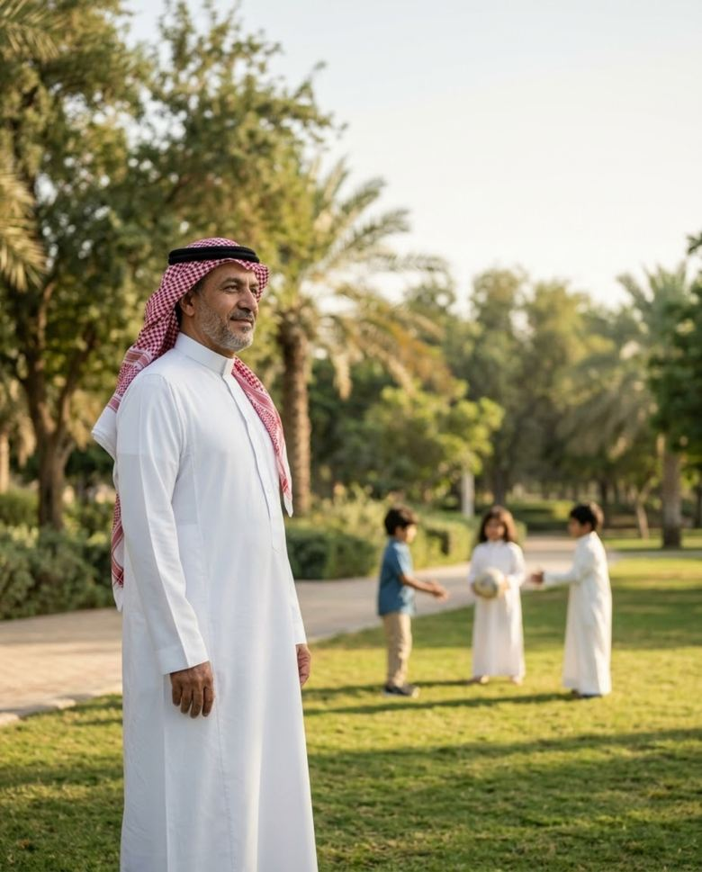
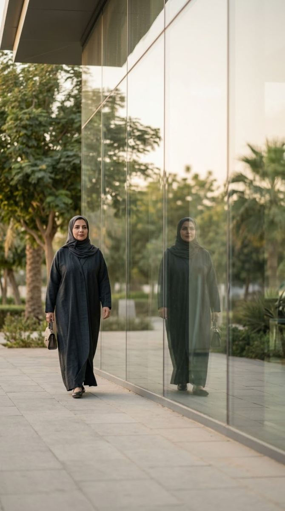
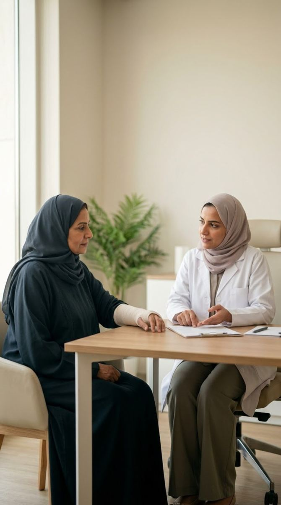
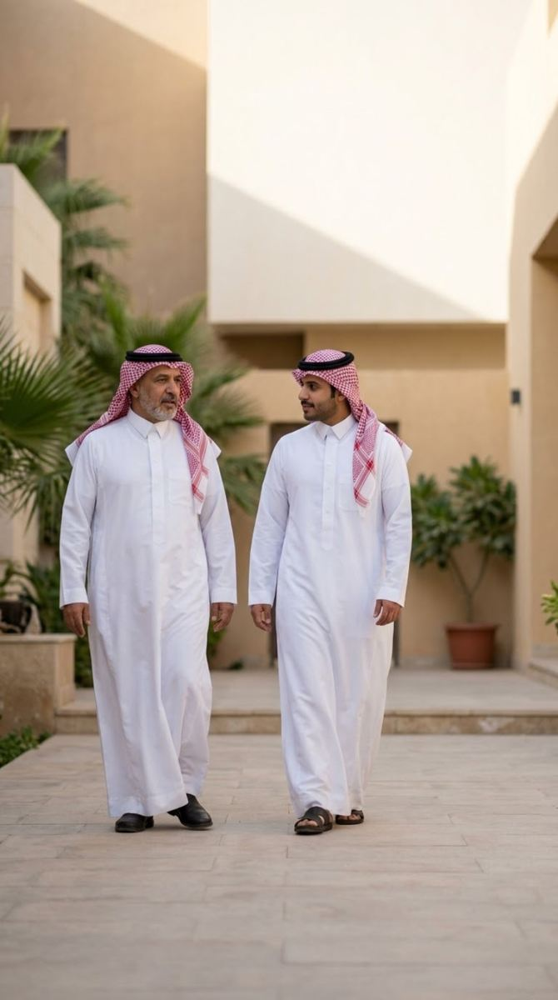
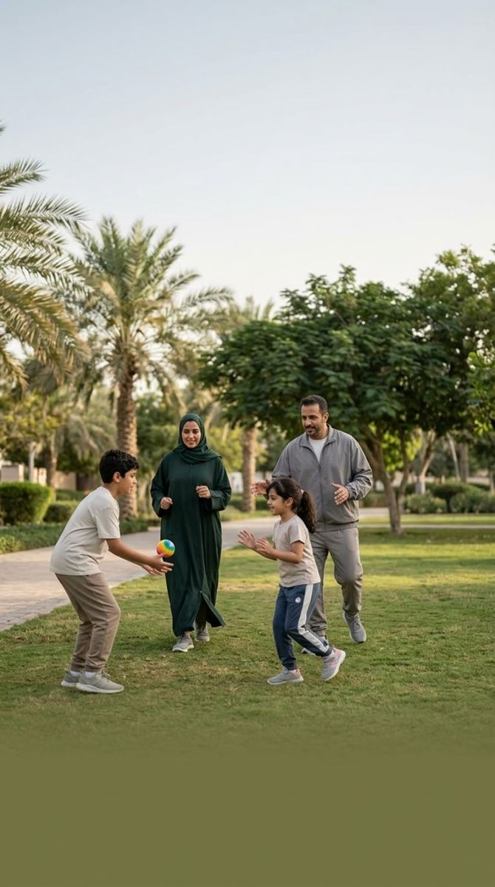
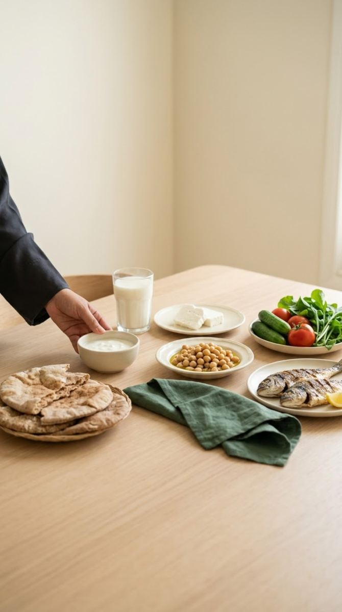
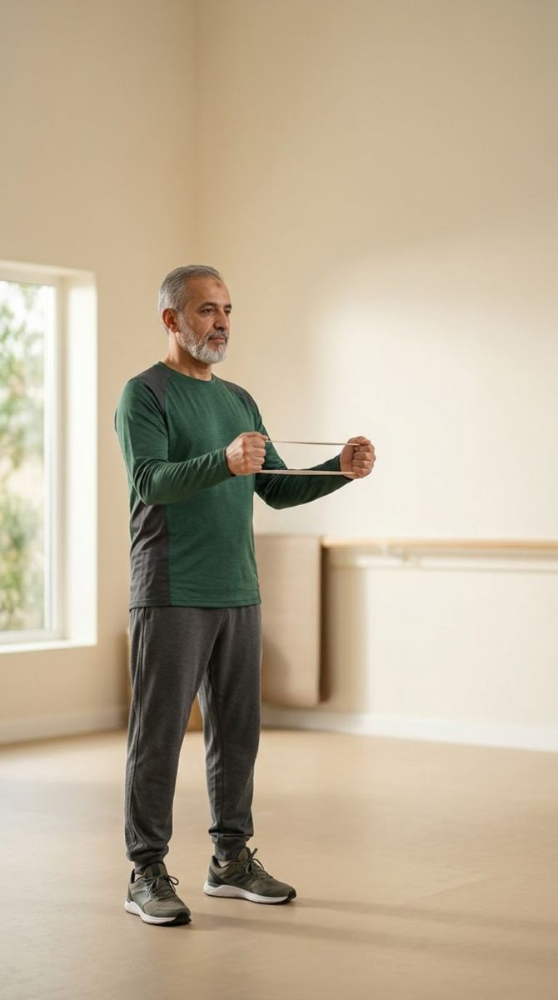
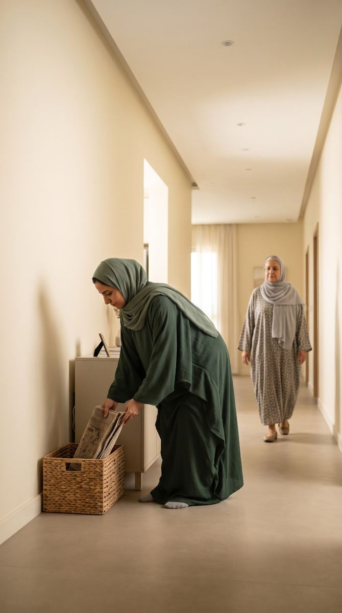
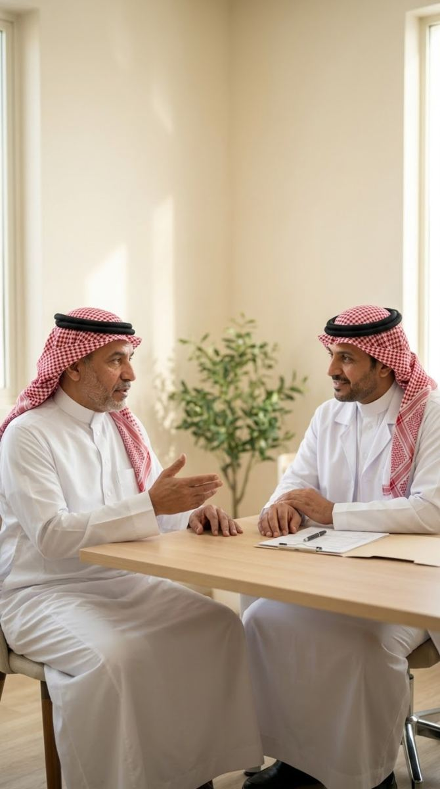
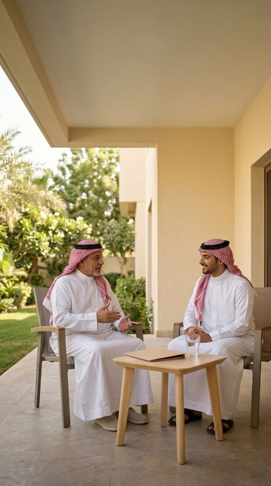

الرسالة 01 من 10الرسالة 01
أمامك ما يستحقأن تبقى قويًا من أجله
صحة عظامك تدعم حركتك واستقلالك ومشاركة لحظات الحياة
خطوتك التالية
ابدأ اليوم بعادة تدعم صحة عظامك
- 01غذاء متوازن
- 02نشاط مناسب
- 03تقييم عند الحاجة

الرسالة 02 من 10الرسالة 02
الصمتلا يعني السلامة
قد تتطور هشاشة العظام دون أعراض مبكرة
خطوتك التالية
ناقش عوامل الخطورة مع المختص
- 01كسر سابق
- 02كورتيزون طويل الأمد
- 03تاريخ عائلي

الرسالة 03 من 10الرسالة 03
الكسر البسيطقد يحمل رسالة مهمة
الكسر بعد سقوط بسيط يستحق تقييم صحة العظام
خطوتك التالية
اسأل عن الوقاية من كسر آخر
- 01تقييم صحة العظام
- 02الوقاية من السقوط
- 03متابعة الرعاية

الرسالة 04 من 10الرسالة 04
صحة العظامتخص الرجال أيضًا
هشاشة العظام ليست حكرًا على النساء
خطوتك التالية
اعرف عوامل الخطورة ولا تؤجل السؤال
- 01كسر سابق
- 02كورتيزون طويل الأمد
- 03تاريخ عائلي

الرسالة 05 من 10الرسالة 05
ابنِ عاداتتدعم عظامهم
غذاء متوازن وحركة يومية منذ الصغر
خطوتك التالية
اجعل الحركة عادة أسرية
- 01حركة يومية
- 02غذاء متوازن
- 03مشاركة أسرية

الرسالة 06 من 10الرسالة 06
غذاء متوازنيدعم عظامك
التنوّع الغذائي جزء من العناية بصحة العظام
خطوتك التالية
نوّع اختياراتك الغذائية
- 01الحليب ومشتقاته
- 02مصادر البروتين
- 03خضراوات وحبوب

الرسالة 07 من 10الرسالة 07
حركة مناسبةتدعمك
النشاط المناسب جزء من العناية بصحة العظام
خطوتك التالية
اختر نشاطًا مناسبًا لحالتك

الرسالة 08 من 10الرسالة 08
خطوة آمنةتبدأ من بيتك
تقليل مخاطر السقوط جزء من العناية بصحة العظام
خطوتك التالية
راجع الإضاءة والعوائق وثبات الحذاء
- 01إضاءة كافية
- 02إزالة العوائق
- 03حذاء ثابت

الرسالة 09 من 10الرسالة 09
زيارتك فرصة…جهّز أسئلتك
شارك طبيبك تاريخ الكسور والأدوية التي تستخدمها
خطوتك التالية
اسأل عن حاجتك للفحص والخطوة التالية
- 01دوّن تاريخ الكسور
- 02جهّز قائمة الأدوية
- 03اسأل عن التقييم

الرسالة 10 من 10الرسالة 10
بعد التشخيص…تستمر الحياة والرعاية
المتابعة والالتزام بالخطة جزء من العناية بصحة العظام
خطوتك التالية
التزم بخطتك ولا تعدّل علاجك بنفسك
- 01متابعة منتظمة
- 02التزام بالخطة
- 03دعم الأسرة
مراجع موثوقة وخطوتك التالية
ناقش احتياجاتك الصحية مع المختص، واختر خطوة مناسبة، وشارك المعرفة مع أسرتك.